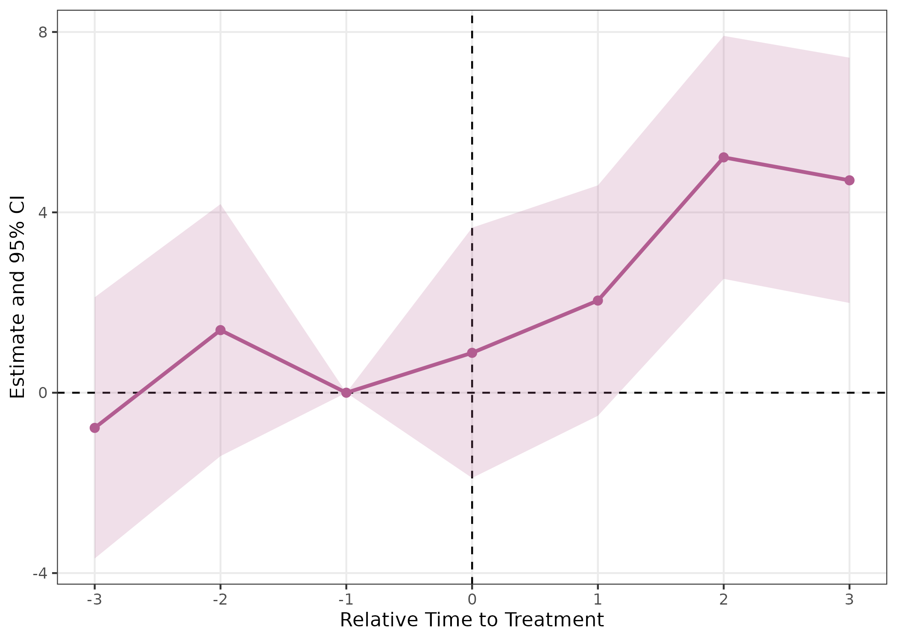
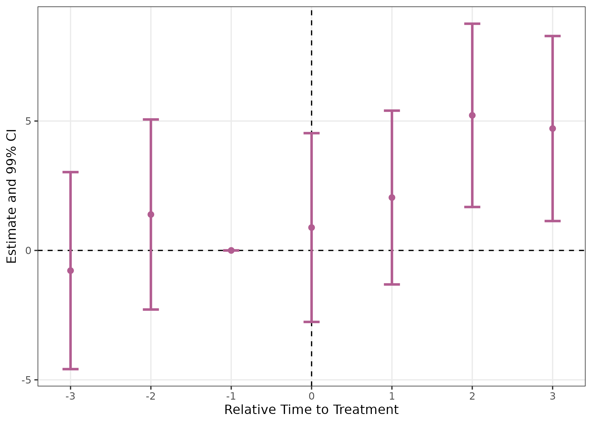
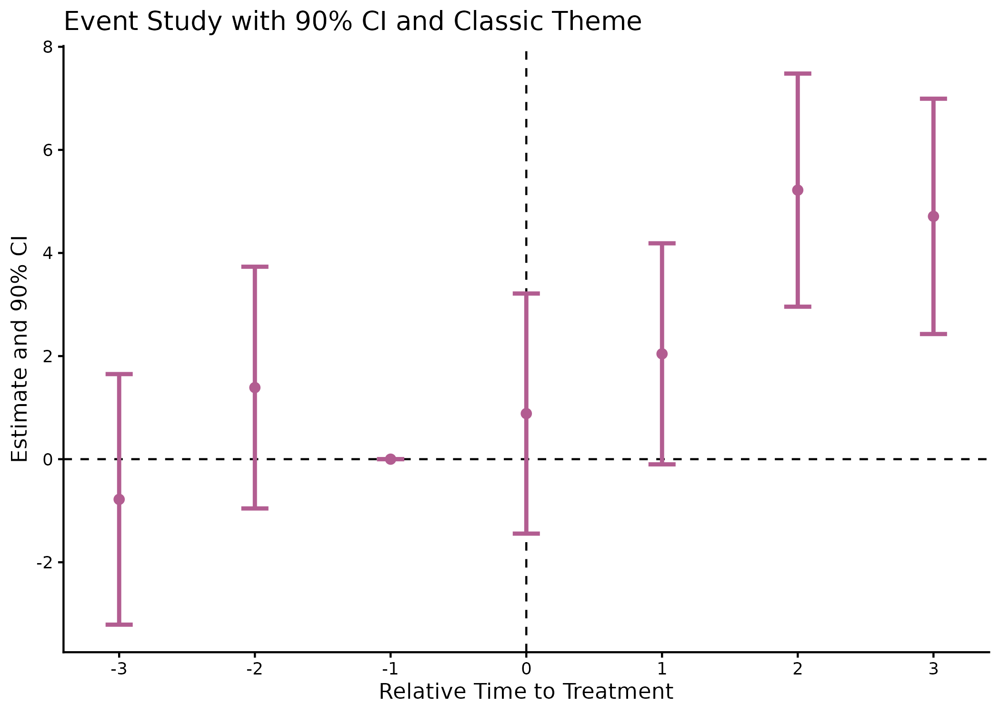
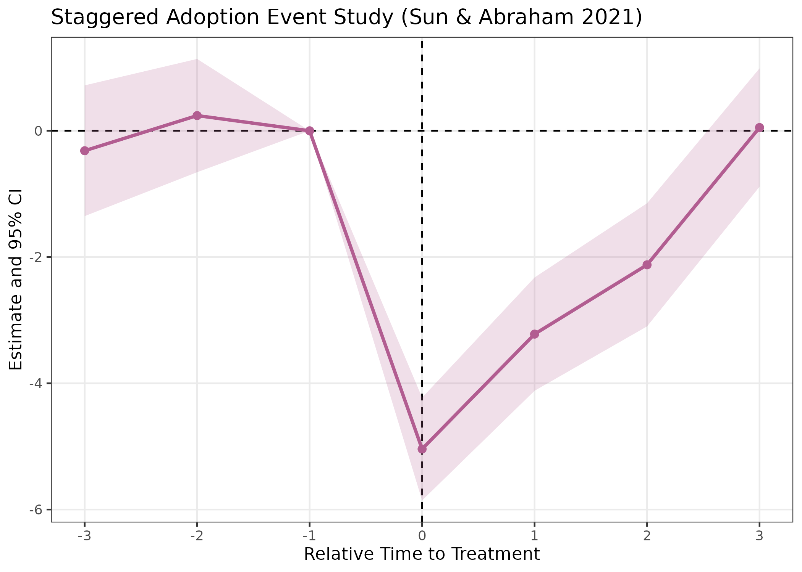
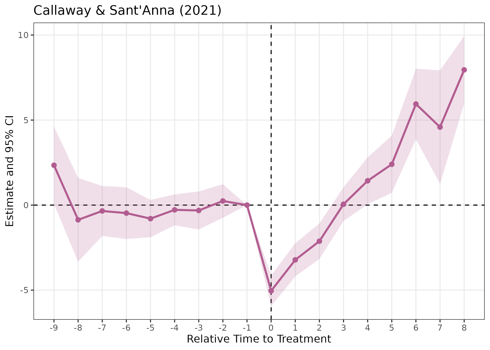
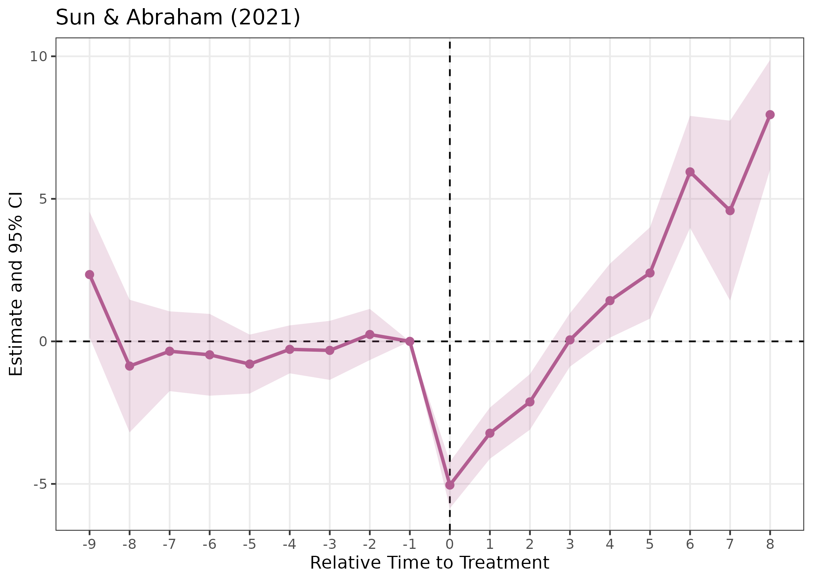
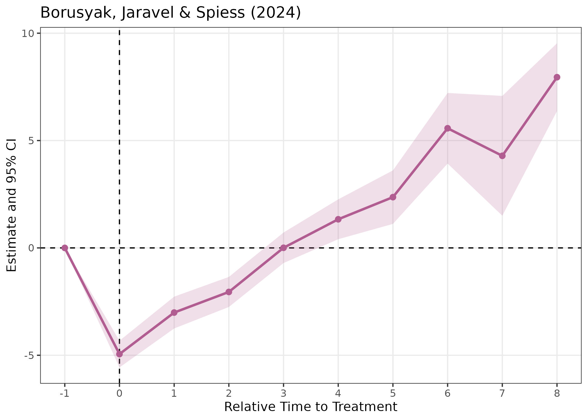
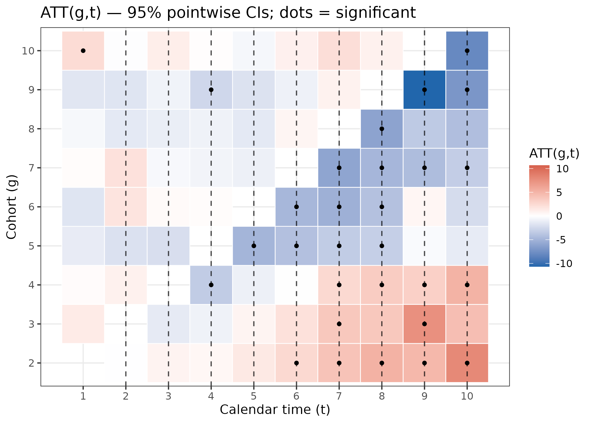
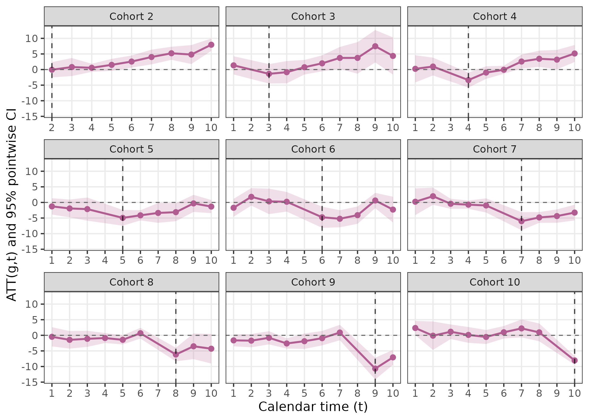

Introduction
The fixes package provides an easy-to-use toolkit
for creating, estimating, and visualizing event study models using fixed
effects regression. With fixes, you can automatically
generate lead and lag dummy variables, flexibly estimate fixed effects
event study regressions, and visualize the results with
ggplot2 using a single pipeline.
This vignette introduces the core functions of the package through simple examples, including recent updates such as multiple confidence interval support and improved plotting options.
Installation
Install the released version from CRAN:
install.packages("fixes")Or with pak (recommended for fast install):
pak::pak("fixes")To install the latest development version from GitHub:
pak::pak("yo5uke/fixes")or
devtools::install_github("yo5uke/fixes")Minimal Example
Below is a basic example using the built-in
fixest::base_did dataset, running an event study, and
visualizing the results.
# Load example data
df <- fixest::base_did
# Run the event study (supports multiple confidence levels)
event_study <- run_es(
data = df,
outcome = y,
treatment = treat,
time = period,
timing = 5, # Treatment occurs at period 5
fe = ~ id + period,
cluster = ~ id,
baseline = -1,
interval = 1,
lead_range = 3,
lag_range = 3,
conf.level = c(0.90, 0.95, 0.99) # Multiple CIs supported!
)
# View results
head(event_study)
#> Event Study Result (fixes)
#> N: 1080 | Units: NA | Treated units: 1080 | Never-treated: NA
#> FE: id + period
#> VCOV: cluster | Cluster: id
#> Method: classic | lead_range: 3 lag_range: 3 baseline: -1Visualizing Event Study Results
The fixes package provides plot_es()
for flexible visualization. You can easily switch between ribbon-style
or error bar CIs, select the displayed CI level, and customize
appearance.
# Basic plot (default: ribbon, 95% CI)
plot_es(event_study)
# Plot with error bars and 99% CI
plot_es(event_study, type = "errorbar", ci_level = 0.99)
# Customize further with ggplot2
plot_es(event_study, type = "errorbar", ci_level = 0.9, theme_style = "classic") +
scale_x_continuous(breaks = seq(-3, 3, by = 1)) +
ggtitle("Event Study with 90% CI and Classic Theme")
Staggered Treatment with sunab
For staggered adoption designs where treatment timing varies across
units, you can use method = "sunab" to implement the Sun
& Abraham (2021) estimator, which is robust to heterogeneous
treatment effects.
# Example with fixest::base_stagg data
df_stagg <- fixest::base_stagg
event_study_sunab <- run_es(
data = df_stagg,
outcome = y,
treatment = treated,
time = year,
timing = year_treated,
fe = ~ id + year,
staggered = TRUE,
method = "sunab", # Use Sun & Abraham decomposition
lead_range = 3,
lag_range = 3,
cluster = ~ id
)
head(event_study_sunab)
#> Event Study Result (fixes)
#> N: 950 | Units: NA | Treated units: 950 | Never-treated: NA
#> FE: id + year
#> VCOV: cluster | Cluster: id
#> Method: SUNAB (staggered-safe)
# Visualize sunab results
plot_es(event_study_sunab) +
ggtitle("Staggered Adoption Event Study (Sun & Abraham 2021)")
New in v0.7.1: The baseline parameter
now applies to both classic and sunab methods,
and the baseline period is included in results with zero estimates for
consistent visualization.
Package Highlights
-
run_es():- Fast, one-step event study for panel data.
- Automatic creation of lead/lag dummies relative to treatment.
- Supports both classic and staggered timing, covariates, clustering, weights, and flexible baseline normalization.
- Choice of estimation methods:
classic(factor expansion) orsunab(Sun & Abraham 2021 for staggered designs). - Multiple confidence interval levels supported (e.g., 90%, 95%, 99%).
- Handles irregular time panels via
time_transform. - Results are filtered to specified
lead_rangeandlag_range(v0.7.1+).
-
plot_es():- Intuitive event study plot with ribbon or errorbar CI display.
- CI level and visual style are fully customizable.
- ggplot2-based for further modification.
-
plot_es_interactive()(v0.7.0+):- Interactive plotly-based visualizations with hover tooltips.
- Displays point estimates, confidence intervals, standard errors, and p-values on hover.
Staggered adoption estimators (v0.8.0)
Standard TWFE event-study regressions can produce biased and
sign-reversed estimates under heterogeneous treatment effects when units
adopt treatment at different times (Callaway & Sant’Anna 2021; Sun
& Abraham 2021; Borusyak, Jaravel & Spiess 2024).
fixes v0.8.0 adds three robust alternatives, all
accessible through the same run_es() interface via the
estimator argument.
We demonstrate all three on fixest::base_stagg, a
simulated staggered-adoption panel with true ATT = 1 for all cohorts and
horizons.
df_stagg <- fixest::base_stagg
# Mark never-treated units with NA (convention for all three estimators)
df_stagg$timing <- df_stagg$year_treated
df_stagg$timing[df_stagg$year_treated == 10000] <- NACallaway & Sant’Anna (2021) — estimator = "cs"
Estimates a separate ATT(g,t) for every cohort-by-period cell, then aggregates to an event-study curve using cohort-size weights.
res_cs <- run_es(
data = df_stagg,
outcome = y,
time = year,
timing = timing,
unit = id,
staggered = TRUE,
estimator = "cs",
control_group = "nevertreated"
)
plot_es(res_cs) + ggplot2::ggtitle("Callaway & Sant'Anna (2021)")
Sun & Abraham (2021) — estimator = "sa"
Builds cohort x relative-time interactions and aggregates with
cohort-share weights. Numerically identical to
fixest::sunab().
res_sa <- run_es(
data = df_stagg,
outcome = y,
treatment = treated,
time = year,
timing = timing,
unit = id,
fe = ~ id + year,
staggered = TRUE,
estimator = "sa",
cluster = ~ id
)
plot_es(res_sa) + ggplot2::ggtitle("Sun & Abraham (2021)")
Borusyak, Jaravel & Spiess (2024) —
estimator = "bjs"
Fits TWFE on untreated observations, imputes counterfactuals for treated units, then averages by horizon.
res_bjs <- run_es(
data = df_stagg,
outcome = y,
time = year,
timing = timing,
unit = id,
staggered = TRUE,
estimator = "bjs"
)
plot_es(res_bjs) + ggplot2::ggtitle("Borusyak, Jaravel & Spiess (2024)")
Under homogeneous treatment effects (as in this DGP), all three estimators give similar results, each recovering a post-treatment ATT close to the true value of 1.
Bootstrap simultaneous confidence bands (v0.8.0)
Pointwise vs. simultaneous CIs
Standard confidence intervals are pointwise: the 95% CI at each horizon covers the true value with 95% probability, but the probability that all intervals simultaneously cover their true values can be much lower when many periods are plotted.
Simultaneous confidence bands (Callaway & Sant’Anna 2021, Corollary 1) control the joint coverage probability. With probability at least 1 − α, the entire event-study curve is contained within the simultaneous band. This is especially important for parallel-trends pre-testing: a pre-trend test based on simultaneous bands controls the family-wise error rate.
Usage
Pass bootstrap = TRUE to run_es() together
with the CS estimator. The multiplier bootstrap (Algorithm 1 of Callaway
& Sant’Anna 2021) is used.
# NOTE: B = 199 shown here for brevity; use B = 999 in practice
res_cs_boot <- run_es(
data = df_stagg,
outcome = y,
time = year,
timing = timing,
unit = id,
staggered = TRUE,
estimator = "cs",
control_group = "nevertreated",
bootstrap = TRUE,
B = 199,
boot_seed = 42
)
# The lighter outer band is the simultaneous CI; the darker inner band is
# the standard pointwise CI.
plot_es(res_cs_boot, show_simultaneous = TRUE)The simultaneous critical value ĉ and per-period simultaneous CI
bounds are stored in attr(res_cs_boot, "bootstrap"). The
simultaneous band is always at least as wide as the pointwise band,
since the critical value ĉ_{1-α} >= z_{1-α/2}.
ATT(g,t) visualization (v0.8.0)
The CS estimator produces a separate ATT estimate for every (cohort
g, calendar period t) pair. plot_att_gt() visualises this
full matrix.
Heatmap
Tiles are filled by the ATT(g,t) estimate. Cells whose pointwise CI excludes zero are marked with a filled dot (●); when bootstrap data are available, simultaneously significant cells also receive an open diamond (◇).
plot_att_gt(res_cs, type = "heatmap")
The vertical dashed lines mark each cohort’s treatment onset (t = g).
Facet plot
One panel per cohort showing ATT over calendar time, with a pointwise CI ribbon. Useful for inspecting heterogeneous dynamics across cohorts.
plot_att_gt(res_cs, type = "facet")
Conclusion
The fixes package streamlines event study estimation and visualization for panel data researchers. With a minimal API, multiple CI support, and robust visualization, it accelerates the workflow for dynamic treatment effect analysis.
For further details and full argument documentation, see:
?run_es
?plot_es
?plot_att_gtHappy analyzing!